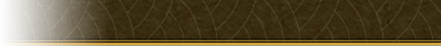

NOTE D'OBSERVATION
« Je vous transmets ici le rapport de retranscription des paroles que j’ai pu noter. Certaines informations sont à considérer avec prudence. Ma position ne me permettait pas d'entendre l’intégralité des échanges sans compromettre ma discrétion ainsi qu'éviter des risques stupides. »
LIRE LE RAPPORTRETRANSCRIPTION DES PROPOS OBSERVÉS

[Participant 4]
Ça devient intéressant.
[Participant 1 (Inconnu)]
Des imposteurs ? Non, ne vous méprenez pas de cette manière. Bien que nous
arborions des tenues similaires, nous ne sommes en aucun cas des vôtres.
Nous n'avons pas la même philosophie ni les mêmes valeurs. Et à vrai dire, notre but est très simple, faire en sorte de prendre tout ce qui est à vous pour nous.
Faire en sorte que votre philosophie disparaisse à jamais. Les profondeurs et démons de l'ordre démoniaque sont déjà contre vous. Mais nous, nous voulons aller encore plus loin.
Vous voyez, nous sommes des purificateurs. Si Maïlus est ici présent, lorsque celui ci a entendu que vous étiez ici, il a voulu directement venir. Bien que nous avions vu qu'il avait pour prérogative de ne pas agir ni clairement intervenir face aux profondeurs et aux démons, nous avons décidé de prendre notre propre initiative, qui a été autorisée.
Quelle est la raison de votre présence ici ? Bien qu'elle doive avoir une raison, sûrement liée à un de vos supérieurs, un des Consuls peut être ou un des Udex, elle dérange.
Nous n'avons pas la même philosophie ni les mêmes valeurs. Et à vrai dire, notre but est très simple, faire en sorte de prendre tout ce qui est à vous pour nous.
Faire en sorte que votre philosophie disparaisse à jamais. Les profondeurs et démons de l'ordre démoniaque sont déjà contre vous. Mais nous, nous voulons aller encore plus loin.
Vous voyez, nous sommes des purificateurs. Si Maïlus est ici présent, lorsque celui ci a entendu que vous étiez ici, il a voulu directement venir. Bien que nous avions vu qu'il avait pour prérogative de ne pas agir ni clairement intervenir face aux profondeurs et aux démons, nous avons décidé de prendre notre propre initiative, qui a été autorisée.
Quelle est la raison de votre présence ici ? Bien qu'elle doive avoir une raison, sûrement liée à un de vos supérieurs, un des Consuls peut être ou un des Udex, elle dérange.
[Participant 2 (Ecclésia)]
Vous avez dit avoir eu autorité. Autorité de qui ? Qui vous a permis de
donner cette autorisation ?
J'aimerais tant l'entendre.
J'aimerais tant l'entendre.
[Participant 1 (Inconnu)]
La Providence, elle, m'a accordé sa parole.
[Participant 3 (Ecclésia)]
Ironie. Les Consuls et Udex sont des êtres résidant sur cette terre depuis
fort longtemps. Ce ne sont pas de vulgaires copies souhaitant alors imposer leurs
idéaux.
Ils viendront effacer ce que l'Ecclesia construit.
Ils viendront effacer ce que l'Ecclesia construit.
[Participant 2 (Ecclésia)]
Vous n'êtes pas sans savoir que nous avons marqué l'histoire par moult
assauts. Nous avons évincé un quartier général des profondeurs. Nous avons assassiné l'un des
derniers maîtres de l'Ordre des profondeurs.
Qu'en est il de vous ? Vous êtes émergents et votre histoire est plate.
Qu'en est il de vous ? Vous êtes émergents et votre histoire est plate.
[Participant 1 (Inconnu)]
Alors, votre cher Auris n'est plus. Cela fait des années et des années que
celui ci n'est pas apparu et pourtant, vous souhaitez encore suivre sa philosophie, sa volonté.
[Participant 1 (Inconnu)]
Suivre les Consuls. Ou du moins, j'imagine qu'un des Consuls se doit
d'être à votre tête. Mais l'Ecclesia n'est plus que des restes qui ne méritent qu'une chose,
être évincés à tout jamais de l'histoire.
Être remplacés ? Non. Être simplement détruits. Après tout, il n'y a que cette manière là de purifier l'esprit vengeur.
Être remplacés ? Non. Être simplement détruits. Après tout, il n'y a que cette manière là de purifier l'esprit vengeur.
[Participant 7 (Ecclésia)]
En effet, mes craintes ont été fondées, cher frère. Il n'y a qu'à voir
leurs constats envers nous, souillés par l'orgueil. Ils sont corrompus.
[Participant 1 (Inconnu)]
Je suis bien d'accord avec toi. Moi et Phara, nous étions pareils
autrefois. Mais nous nous sommes répandus.
Cette voie. Nous avons décidé de suivre sa voie, qui nous a été octroyée.
Celle qui nous rapproche davantage de la vraie humanité. Vers la vraie divinité.
Cette voie. Nous avons décidé de suivre sa voie, qui nous a été octroyée.
Celle qui nous rapproche davantage de la vraie humanité. Vers la vraie divinité.
[Participant 3 (Inconnu)]
Vers la véritable Providence. Exactement cela.
[Participant 3 (Inconnu)]
Vers la véritable Providence. Exactement cela.
[Participant 2 (Ecclésia)]
Vous avez parlé d'un sujet intéressant celui de l'humanité. Si je regarde
ces trois humains, à ma droite, ils ont tous du mal. Ils portent un blasphème des
profondeurs.
Ils représentent parfaitement l'humanité. Alors je pense que, de par votre accoutrement et votre couleur le blanc vous allez me sortir ce baratin comme quoi vous êtes la pureté incarnée, la décision la plus parfaite.
Rejoindre nos rangs n'est pas subir un lavage de cerveau. Vous rejoignez parce que notre idée, notre philosophie vous convient. Vous n'en êtes pas forcés.
Les personnes ayant rejoint l'Ecclesia sont des êtres totalement en pleine conscience des agissements, des actions et de ce que nous prenons.
Ils représentent parfaitement l'humanité. Alors je pense que, de par votre accoutrement et votre couleur le blanc vous allez me sortir ce baratin comme quoi vous êtes la pureté incarnée, la décision la plus parfaite.
Rejoindre nos rangs n'est pas subir un lavage de cerveau. Vous rejoignez parce que notre idée, notre philosophie vous convient. Vous n'en êtes pas forcés.
Les personnes ayant rejoint l'Ecclesia sont des êtres totalement en pleine conscience des agissements, des actions et de ce que nous prenons.
[Participant 1 (Inconnu)]
Alors quoi ? Mon Consul m'a autrefois énoncé la vérité. Ceux qui
rejoignent l'Ecclesia ont été lavés totalement de leur cerveau lorsqu'ils l'ont
rejoint.
Par le pouvoir abyssal de Horis, auquel autrefois nous étions si proches, et si dévoués. À cause de ce pouvoir, nous n'étions plus nous mêmes. Nous n'étions que des pantins.
Non. Nous avions pleine conscience. Mais regardez nous.
Depuis que celui ci n'est plus là, nous avons notre propre conscience. Vous. Tout comme nous.
Lorsque nous étions d'Ecclesia du moins. Mais… pas tous n'ont connu cette époque.
Par le pouvoir abyssal de Horis, auquel autrefois nous étions si proches, et si dévoués. À cause de ce pouvoir, nous n'étions plus nous mêmes. Nous n'étions que des pantins.
Non. Nous avions pleine conscience. Mais regardez nous.
Depuis que celui ci n'est plus là, nous avons notre propre conscience. Vous. Tout comme nous.
Lorsque nous étions d'Ecclesia du moins. Mais… pas tous n'ont connu cette époque.
[Participant 3 (Ecclésia)]
La lumière nous a éclairés. Cesse de me parler de tes lumières. Elles ne
sont que balivernes.
Elles te correspondent à toi peut être. Balivernes ? Balivernes, mensonges, foutaises.
Elles te correspondent à toi peut être. Balivernes ? Balivernes, mensonges, foutaises.
[Participant 1 (Inconnu)]
Je comprends mieux vos paroles, Simélus. Elles ne peuvent pas
comprendre.
Oui.
Oui.
[Participant 7 (Inconnu)]
Quand ils ne seraient qu'une seule fois accordés leur pardon… Connaissent
ils seulement ce mot ?
[Participant 1 (Inconnu)]
Je me le demande. Ceux ci sont bien trop orgueilleux. Ils veulent encore
correspondre à une vie passée qui ne doit plus exister.
Il n'y a qu'une seule manière de régler cela.
Il n'y a qu'une seule manière de régler cela.
[Participant 3 (Ecclésia)]
Par le feu purificateur.
[Participant 1 (Inconnu)]
Nous sommes de l'Alliance. L'Alliance Providentielle.
[Participant 3 (Ecclésia)]
L'Alliance. Oui, l'Alliance. Et alors quoi ?
[Participant 2 (Ecclésia)]
Vous allez racler tous les fonds de tiroirs et vous allier à n'importe qui
? Vous allez essayer de créer un mouvement ?
[Participant 1 (Inconnu)]
Nous n'avons nul besoin de cela.
[Participant 2 (Ecclésia)]
Adopter des fidèles ? Convaincre des jeunes pousses ? Des enfants en
développement de vous rejoindre ?
Parce que votre idée est dite pure ?
Parce que votre idée est dite pure ?
[Participant 3 (Ecclésia)]
Ce sont vous les mauvais dans l'histoire. Vous entendez nos histoires ou
non ? Rappelez moi qui vous êtes.
Un ordre de refoulés.
Un ordre de refoulés.
[Participant 2 (Ecclésia)]
Alors si je prends vos mots à la lettre, étant donné qu'une de vos lignes
supérieures a foulé ce manteau et ce blason, ce dernier était également un refoulé. Ah, vous
êtes pathétiques. Un peu comme votre ordre, finalement.
[Participant 7 (Inconnu)]
La Sainte Mère des Ténèbres ?
[Participant 2 (Ecclésia)]
La Sainte Mère.
[Participant 7 (Inconnu)]
Mais qu'est ce que j'entends ?
[Participant 2 (Ecclésia)]
Vous parlez comme si vous étiez sa création. Comme si vous étiez nés
d'elle même. Vous êtes des fanatiques.
Vous l'idolâtrez simplement parce que sa puissance surpasse la vôtre. Après tout, c'est la mentalité d'un démon d'être faux et fourbe. Cessez ce blasphème.
Vous l'idolâtrez simplement parce que sa puissance surpasse la vôtre. Après tout, c'est la mentalité d'un démon d'être faux et fourbe. Cessez ce blasphème.
[Participant ???]
Je ne blasphémerai pas du tout si vous y voyez cela. Mes paroles sont
véridiques et concrètes.
[Participant ???]
N'oubliez pas que c'est sa création qui a créé votre petit ordre. Qui ? La
Marguerite Messiaen.
[Participant ???]
Alors je ne sais pas de quel droit vous vous permettez de parler d'elle
comme si c'était autre chose.
[Participant ???]
Oui, rien d'autre.
[Participant ???]
Vous avez essayé de marquer l'histoire. Vous êtes juste une belle copie de
l'Empire Rouge.
[Participant ???]
Vous avez essayé encore de marquer l'ordre une nouvelle fois. La vie est
une autre chose, peut être.
[Participant 2 (Ecclésia)]
Vous ouvrez beaucoup votre bec. Mais vous n'êtes qu'un tournevis.
Princesse du Givre.
Oui, la glace. Je vois. Oui, l'inquisition.
Alors vous dites que nous sommes… des imposteurs.
Oui, la glace. Je vois. Oui, l'inquisition.
Alors vous dites que nous sommes… des imposteurs.
[Participant 7 (Inconnu)]
Je vous prépare à ne plus avoir renié votre véritable existence. Et une
preuve…
Que vous n'êtes même plus censés exister en ce monde.
Que vous n'êtes même plus censés exister en ce monde.
[Participant 7 (Inconnu)]
Je vous laisse vous expliquer.
[Participant 8 (Ecclésia)]
Vous pensez ? Évidemment.
[Participant 7 (Inconnu)]
Puisque je parle de vous.
[Participant 3 (Ecclésia)]
Non, je vous assure qu'ils ne me concernent pas.
[Participant 6 (Ecclésia)]
Non, mais je n'ai jamais été là la différence. Mais enfin, ce n'est pas
réellement le sujet.
C'est ce petit avant poste là bas que vous avez décidé d'imposer ?
C'est ce petit avant poste là bas que vous avez décidé d'imposer ?
[Participant 8 (Ecclésia)]
Et vous pensez nous mettre à l'encontre de monstres qui ne risquent jamais
rien.
[Participant 6 (Ecclésia)]
Vous faites fausse route. Ce territoire a toujours été neutre.
Les pourfendeurs ont essayé d'y pénétrer. Ils ont tenté de se l'approprier et de faire en sorte que les démons replient. Mais cela n'a jamais réussi.
Les pourfendeurs ont essayé d'y pénétrer. Ils ont tenté de se l'approprier et de faire en sorte que les démons replient. Mais cela n'a jamais réussi.
[Participant 3 (Ecclésia)]
Et vous pensez que c'est vous qui allez réussir ? Sérieusement ? Ne prenez
pas vos désirs pour une réalité.
[Participant 1 (Inconnu)]
Je pense que cette discussion a bien trop duré. Ne pensez vous pas,
Simélus ? Méphistos ? Phara ? Lucius ?
[Participant 4 (Ecclésia)]
Ne m'appelle pas. Êtres de la glace, vous qui êtes nés.
Donnés par un titre d'une lune déchue. C'est assez intéressant. Vous nous avez parlé face à tous.
Vous avez parlé par des balivernes. Mieux vaut rester à votre place. Votre demande de parole n'est pas acceptée parmi nous.
Alors retournez dans votre château. Faire votre travail de princesse, comme vous le prétendez.
En réalité, vous semblez être un être blessé, tel un mouton récupéré à la cuillère, demandant quelque chose d'inutile pour votre maître.
Vous semblez dénués de sens.
Restez là.
Donnés par un titre d'une lune déchue. C'est assez intéressant. Vous nous avez parlé face à tous.
Vous avez parlé par des balivernes. Mieux vaut rester à votre place. Votre demande de parole n'est pas acceptée parmi nous.
Alors retournez dans votre château. Faire votre travail de princesse, comme vous le prétendez.
En réalité, vous semblez être un être blessé, tel un mouton récupéré à la cuillère, demandant quelque chose d'inutile pour votre maître.
Vous semblez dénués de sens.
Restez là.
[Participant ???]
C'est dire si vous savez.
[Participant 4 (Ecclésia)]
Oh oui. Bien plus que vous ne le saurez, démons.
[Participant 1 (Inconnu)]
Que ce mélange d'émotions et de péchés s'arrête ici. Ces discussions ne
mènent à rien et ne mèneront à rien.
[Participant ???]
C'était mieux avant.
[Participant 2 (Inconnu)]
Notre passage vous a chamboulés. Pour vous en prendre à la démone de la
glace… Oui, que voulez vous ?